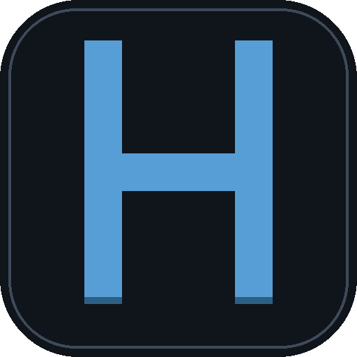

Habbo Hotel: Origins
— Web Port
Rotate your device for the best experience

HABBO
Hotel: Origins — Web Port
Loading player…
First load downloads the full hotel client (≈100 MB) — keep the screen on.